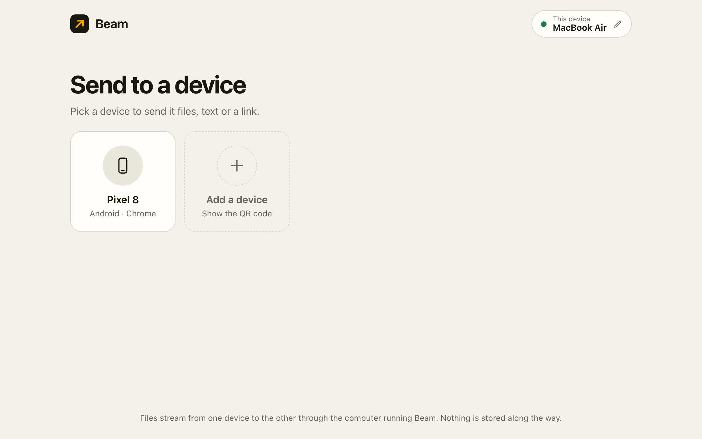
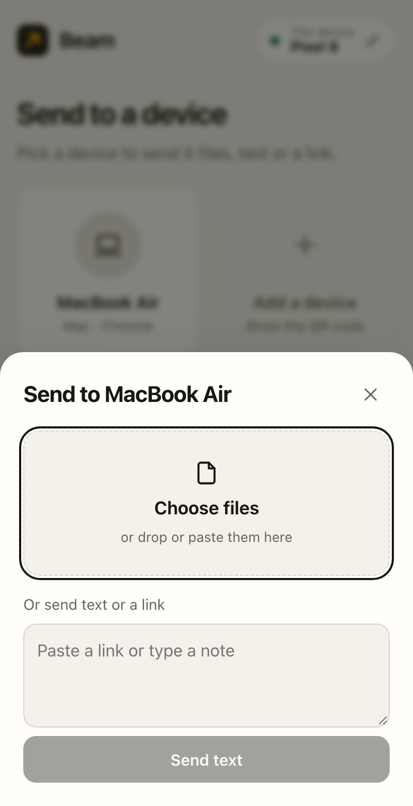
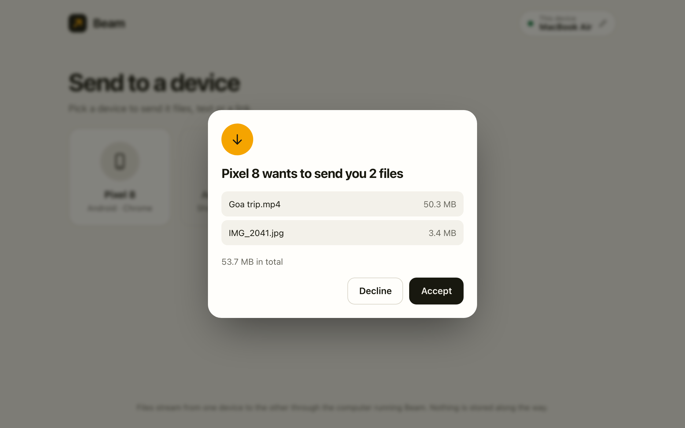

Send files between your devices. No cloud in the middle.
Beam is a free Mac app. Your phone, tablet or other laptop just opens a web page on the same Wi-Fi, and files go straight across. No account, no cable, no upload to anyone's server.
The preferred way: install from Terminal
- Open Terminal on your Mac (press ⌘ Space, type "Terminal", press Return).
- Paste this line and press Return.
$ curl -fsSL https://raw.githubusercontent.com/DhananjaySarathe/beam-file-transfer/main/install.sh | bashBeam lands in Applications and opens, with no warning from macOS. Free and open source; read the script before you run it if you like.
Or download the app file
This works too, but macOS blocks a browser download the first time. The fix takes a minute.
Version 1.1.0 · all releases

- 1Open Terminal
- 2Paste the line
- 3Beam opens
Three taps, and it's on the other device
-
Open Beam on your Mac
It shows an address and a QR code under "Add a device". That is all the setup there is.
-
Scan the code with your phone
The page opens in the phone's browser. Nothing to install. Tap the Mac, then choose files, or paste a link or a note.

-
Accept on the other side
Nothing arrives until you say yes. Files land in Downloads, one after another, and either side can cancel.

Where your file goes
From one device, through the Mac running Beam, to the other. It is passed along as it arrives and never written to disk on the way, so nothing is left behind and nothing leaves your network.
- No account
- No sign-up and no analytics. Device names are random and stay in your browser.
- No size cap
- Files stream instead of being buffered, so the limit is your devices, not Beam.
- Any device with a browser
- Android, iPhone, Windows, Linux. Only the Mac needs the app.
- Text and links too
- Paste a link on one screen and copy it on the other.
Good to know before you install
- What you need
- A Mac on macOS 13 (Ventura) or later, Apple Silicon or Intel. Your other devices need only a browser and the same Wi-Fi.
- One question from macOS
- "Accept incoming connections?" Choose Allow. That is what lets your phone reach the Mac; without it the page will not load there.
- Where files land
- In the Downloads folder of the device that receives them. Nothing is kept on the Mac in between.
- Stopping it
- Close Beam's window. That quits the app and nothing stays running in the background.
- Updating
- Run the same install line again. It replaces Beam with the latest version.
- Removing it
- Drag Beam from Applications to the Bin. Its small settings folder is
~/Library/Application Support/Beam. - Use a network you trust
- Beam talks plain HTTP inside your Wi-Fi, so anyone on it can open the page and offer you a file. Nothing arrives unless you accept. Best at home, not on public Wi-Fi.
- Not on a Mac?
- Windows and Linux can run Beam from the source with Node.js. The app and the install line are for Macs.
- Still early
- Tested end to end on an Apple Silicon Mac with Chrome. The Intel build has not been run on an Intel Mac yet; tell us if it misbehaves.
Downloaded it and see "Beam" Not Opened?
macOS blocks apps downloaded in a browser that are not signed with a paid Apple developer certificate. Beam is fine. The install line above avoids this; if you already used the Download button, fix it once, either way:
In System Settings
- On the warning, click Done. Not "Move to Bin".
- Open System Settings → Privacy & Security and scroll down.
- Next to "Beam was blocked to protect your Mac", click Open Anyway and confirm.
Or in Terminal
Paste this, press Return, then open Beam again.
$ xattr -dr com.apple.quarantine /Applications/Beam.appRather run the code?
Beam is one small server with no dependencies. On any computer with Node.js 20 or newer, three commands start it, and the terminal prints the address and QR code.
View the source on GitHub$ git clone https://github.com/DhananjaySarathe/beam-file-transfer.git
$ cd beam-file-transfer
$ npm start
Beam is running
This computer http://localhost:3210
Other devices the address on your Wi-Fi, with a QR code